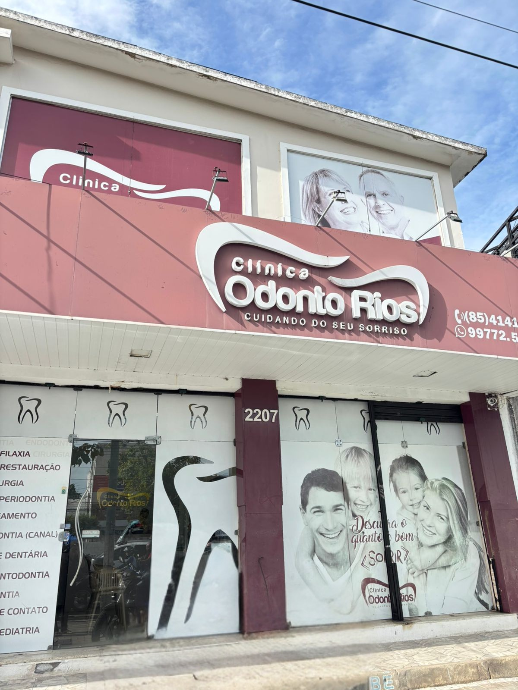

Cuidar do sorriso é cuidar da vida

Se você evita sorrir, sente dificuldade para mastigar ou já adiou um tratamento por medo, aqui você será ouvido, respeitado e bem cuidado.
Implantes dentários, próteses, tratamento ortodôntico, clareamento dental, placas para bruxismo e acompanhamento completo — sempre com foco no conforto, na função e na estética natural.
📍 Rua Exemplo, 2207 – Fortaleza / CE
📞 (85) 99772-5284
⏰ Segunda a sexta, das 8h30 às 17h30